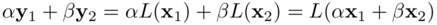
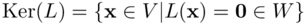
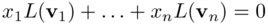
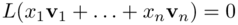

Immagine e nucleo di una trasformazione
Se la trasformazione L è lineare da V a W, si chiama immagine della trasformazione di L l'insieme dei vettori di W che sono i trasformati dei vettori di V:
Im(L)
Se y ∈ Im(L) allora si ha y ∈ L(x) per qualche x ∈V.
Teorema K.1
L'insieme Im(L) è un sottospazio vettoriale di W.
Fissate le basi in V e W, sia A una matrice di tipo (m,n) che rappresenta L. Allora
dim Im(L) = rango di A
Dim. La proprietà 1) segue dalla linearità di L, se y1=L(x1) e y2=L(x2) e α e β in 𝕂:
Per dimostrare la 2) osesrviamo che dalla dimostrazione del teorema di rappreesntazione, si vede che Im(L) è generato dai vettori L(u1), ..., L(un). Le colonne della matrice A sono le componenti scalari degli L(ui) rispetto alla base v1, ..., vn di W. Se r tra queste colonne sono indipendenti i corrispondendit vettori L(ui) sono indipendenti e viceversa. Da ciò segue che r = dim Im(L).
Da questo teorema segue che le matrici che rappresentatno (rispetto a basi diverse) la stessa trasformazione lineare hanno lo stesso rango.
Def. K1 (Nucleo di una trasformazione)- Siano V, W due spazi vettoriali su 𝕂, e sia L: V → W, un'applicazione lineare. Il nucleo dell'applicazione che si indica col simbolo Ker(L), è l'insieme dei vettori di v ∈ V che hanno come immagine il vettore nullo di W, L(v)=0. Ossia l'insieme:
Anche Ker(L) è uno spazio vettoriale (ciò è di facile verifica).
Teorema. K2 Sia L: V → W una trasformazione lineare, il cui Ker = {0}. Se v1, ..., vn sono vettori linearmente indipendenti di V allora L(v1), ..., L(vn) sono vettori linearmente indipendenti di W.
Dim. Siano x1, x2 , ..., xn coefficienti tali che:
Per linearità si ottiene:
Siccome v1, ..., vn sono linearmente indipendenti ciò implica che xi=0 per i= 1,..,n. Il teorema è così dimostrato. □
Teorema. K3 Sia V uno spazio vettoriale di dimensione n e sia L: V → W una trasformazione lineare, nello spazio W. Vale la seguente identità

Dim. Poniamo k= dim Ker(L) e n = dim V. Scegliamo una base w1, w2, ..., wk del nucleo. Si aggiungono a questa base n -k vettori linearmente indipendenti w1, w2, ..., wn in modo che:
w1, w2, ..., wk, uk+1,..., un
formino una base per V. Sia v un generico vettore di V si può quindi scrivere:

Essendo L(wj)= 0 per ogni j =1, 2, ...,n, si ha:

per cui L(uk+1),..., L(un) risulta un sistema di generatori per Im(L). Si ha quindi dim Im(L) ≤ n-k.
Facciamo vedere che dim Im(L) = n-k, infatti l'insieme di vettori vettori uk+1,..., un è un insieme linearmente indipendente. Se fossero dipendenti si avrebbe

con qualche βj diverso da zero. Ciò implicherebbe che il vettore non nullo βk+1uk+1 +...+ βnun ∈ Ker(L); ma allora questo vettore si potrebbe scrivere come combinazione lineare dei vettori wi il che è un assurdo poichè i vettori wi e ui sono tra loro linearmente indipendenti.□